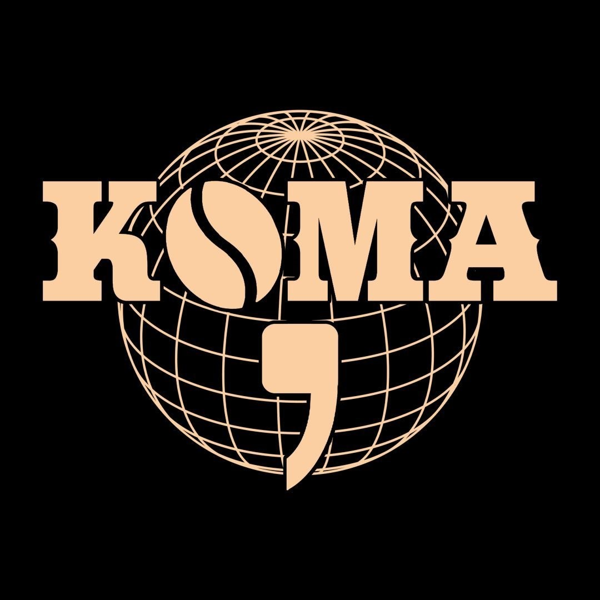
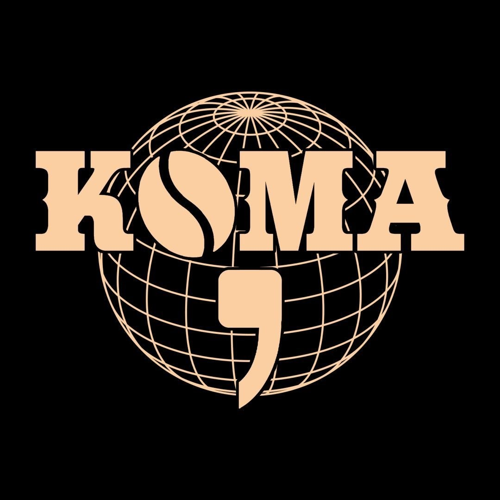
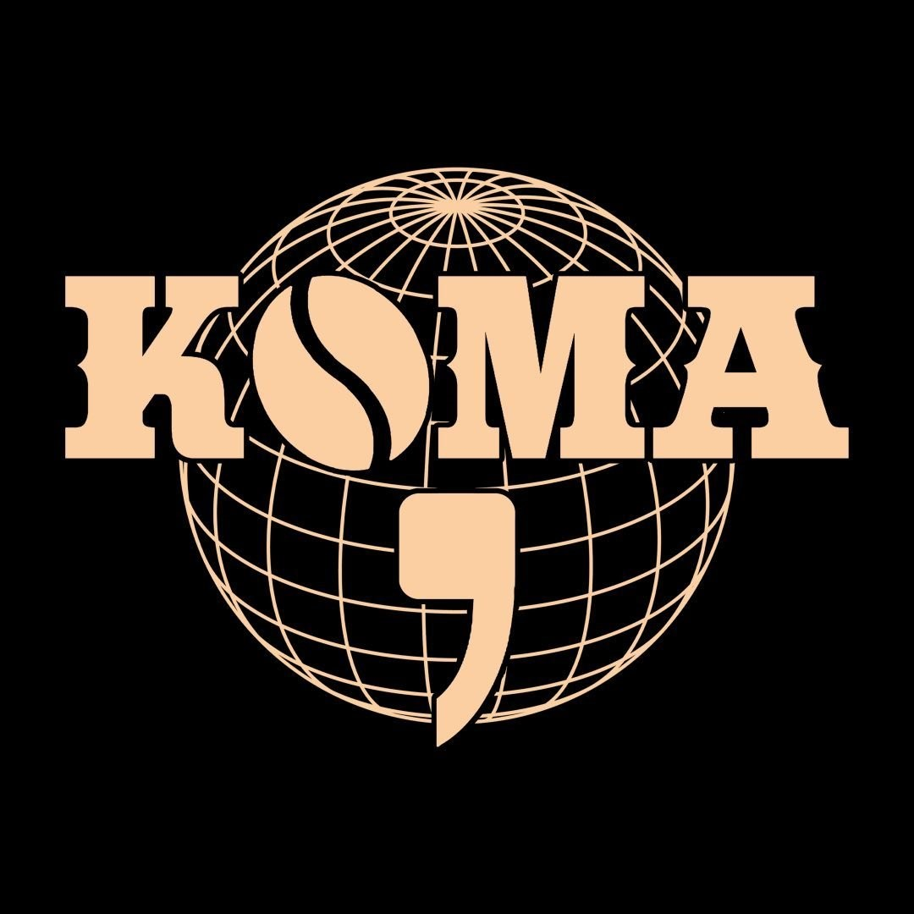

Galeri Kafe Koma


 

"selalu ada kata setelah koma"
Selamat datang di Kafe Koma, tempat di mana cita rasa bertemu dengan kenyamanan. Kami adalah kafe yang didirikan dengan semangat untuk menyajikan pengalaman kuliner yang tak terlupakan. Terletak di jantung Kota Pal IX, Kafe Koma menawarkan suasana yang hangat dan ramah, ideal untuk bersantai, berkumpul dengan teman, atau bahkan bekerja.
Di Kafe Koma, kami percaya bahwa setiap cangkir kopi memiliki cerita. Kami menggunakan biji kopi pilihan yang dipanggang dengan sempurna untuk menghasilkan rasa yang kaya dan aroma yang menggoda. Selain kopi, kami juga menawarkan berbagai pilihan minuman segar dan makanan lezat yang dibuat dengan bahan-bahan berkualitas tinggi.
Kami berkomitmen untuk memberikan pelayanan terbaik kepada setiap pengunjung. Tim barista kami yang terlatih siap membantu Anda menemukan minuman yang sesuai dengan selera Anda. Apakah Anda penggemar kopi klasik atau ingin mencoba sesuatu yang baru, kami memiliki sesuatu untuk semua orang.
Kafe Koma bukan hanya sekadar tempat untuk menikmati makanan dan minuman; kami juga berusaha menciptakan komunitas. Kami sering mengadakan acara, seperti live music dan workshop, untuk menghubungkan orang-orang dan merayakan kreativitas.
Kami mengundang Anda untuk datang dan merasakan sendiri kehangatan dan kelezatan yang ditawarkan Kafe Koma. Setiap kunjungan adalah kesempatan untuk menciptakan kenangan baru. Selamat datang di Kafe Koma, tempat di mana setiap momen menjadi istimewa.
Senin - Jumat: 08:00 - 22:00
Sabtu - Minggu: 09:00 - 23:00

"Kafe Koma adalah tempat favorit saya! Makanannya selalu lezat dan suasananya sangat nyaman."
"Pelayanan yang ramah dan cepat. Saya selalu merasa di rumah saat berada di sini."
Dapatkan diskon 20% untuk semua minuman setiap hari Senin!